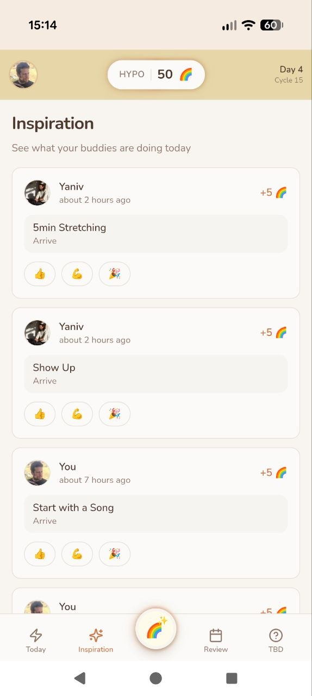
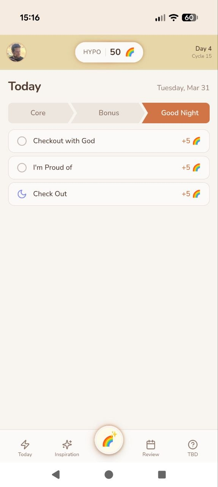

הקופיילוט שלך לדו-קוטביות
באלאנס עוזרת לאנשים עם הפרעה דו-קוטבית לעקוב אחרי מחזורים, לבנות שגרות יומיות ולהישאר אחראים עם חברים. לא אפליקציה רפואית. קופיילוט למוח שלך.
לוגינג יומי של מצב רוח, הצלבה עם נתונים (שעון חכם, תרופות, שינה), זיהוי דפוסים עם הפסיכיאטר
מה זאת אומרת להשתתף גם בזמן דיכאון. לקום מהמיטה. למדוד לא רק את הנפילה, אלא גם את הקימה
תרגול קבוצתי, שיתוף בלי שיפוט או "תיקון", עדות הדדית ותחושה משותפת


מתחילים כל יום עם צ'קליסט אישי. צ'ק-אין עם עצמך, נשימות, הגדרת מטרה, התחלה עם שיר. כל משימה שמושלמת מרוויחה 🌈 נקודות. טאבים של ליבה, בונוס ולילה טוב.
+5 🌈 לכל משימה
עוקבים אחרי המחזורים הדו-קוטביים לאורך זמן. רואים את היום הנוכחי, אורך מחזור ואחוז הימים הטובים. באלאנס עקבה אחרי 15 מחזורים עם ממוצע של 23.7 ימים, ועוזרת לזהות דפוסים שחשובים.
להכיר את הדפוסים שלך
ספרינטים של 14 יום עם חברים. עוקבים אחרי צ'ק-אינים, סטריקים ושיאים אישיים ביחד. השותפים שלך רואים את ההתקדמות שלך, ואתה רואה את שלהם. אף אחד לא הולך לבד.
מערכת באדי מובנית
רואים מה החברים עושים היום. יניב עשה מתיחות. אתה התחלת עם שיר. מגיבים עם 👍 💪 🎉 כדי לעודד אחד את השני. מוטיבציה דרך אחריותיות משותפת.
אתה לא לבדוידאו הדגמה בקרוב. בינתיים, דפדפו בצילומי המסך למעלה.
באלאנס בשלבי פיתוח מוקדמים עם קבוצה קטנה של משתמשים.
נבנית על ידי רון גרוס ויניב.